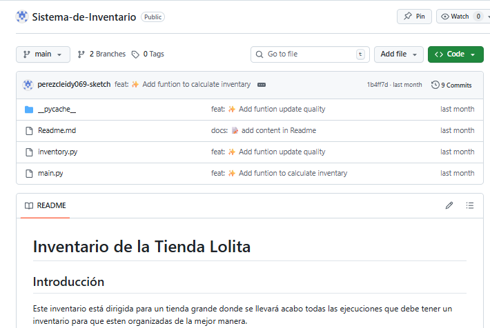

Proyecto No.1
Este proyecto en un inventario donde las administradores pueden cambiar, eliminar productos, pero también hay una área donde el cliente busca los productos que necesita, agregar y ver todos los productos que hay en general o por categorías.
Click aquí